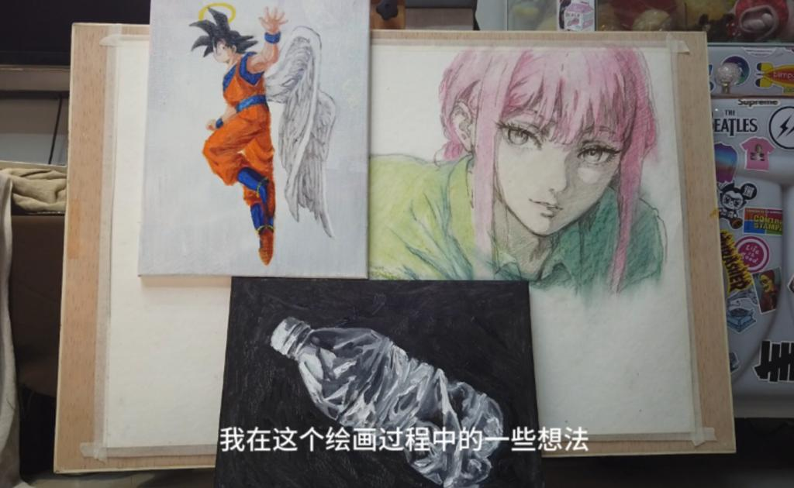
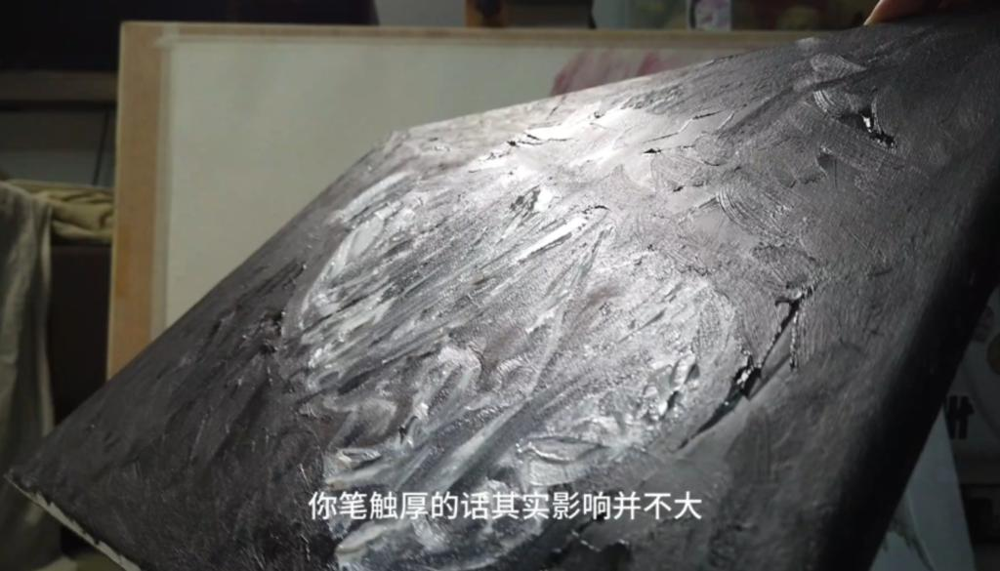
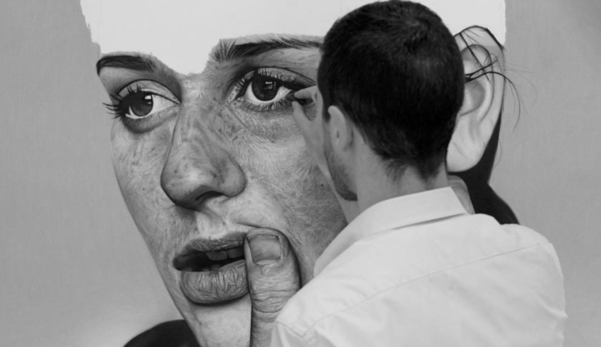

公开课
适合的才是最好的：探索绘画材料与技法
最近，我完成了三张小练习作品，借此机会，我想分享一下我在绘画过程中的一些想法和发现。每张作品都体现了不同的材料和技法的选择，如何影响最终的画面效果。

第一张作品：速写瓶子
这张作品采用了速写的方式，直接使用油画颜料绘制。这种画法的主要发展是在印象派时期，而我采用的方式也基本上沿用了印象派的绘画方式，即颜料压着颜料画，可能忽略了颜色层之间的关系。尽管我尝试使用了“肥盖瘦”的技巧，但与古典方法相比，它有一定的差别。

我注意到，即使在画布上放置了一个星期，白色的颜料依然保持新鲜，显示出白色颜料的慢干特性，使得上层干的慢，不会出现太多吸油或违背“肥干瘦”的情况。这说明即使是旧的画布，只要底层处理得当，也可以成为稳定的练习画布。
材料的选择与适应性
这张画的底子是一个经过多次丙烯和油画层次绘制的棉画布，表明了即便是不是最高质量的材料，只要适应了画家的需求，也能够产生满意的作品。我在这张作品中采用的是一种直接画法，没有经过起稿或用铅笔定位，直接定型。这种方法虽然简洁，但需要画家对形状和颜色有深刻的理解。

在这次的实践中，我发现即使是相同的技法，不同的材料和底子会大大影响作品的表现。这张作品的底子有一定的肌理，但对于表现这种厚涂的风格并没有太大的影响。反之，如果是需要精细描绘细节的写实作品，这种底子就可能不适用。
总结
这三张练习作品让我更加深刻地理解到，选择适合自己风格和需求的材料和技法是至关重要的。不是所有的技法都适合每一张画布，也不是所有的画布都适合每一种技法。适合的，才是最好的。在创作过程中，我们需要不断地尝试和调整，找到最适合表现自己想法的方式。这次的练习不仅是技术上的尝试，更是对材料与技法之间关系深度探索的过程。
希望我的分享能够给大家带来一些启发，让我们一起探索更多的可能性，创作出更多符合自己风格和表达需求的作品。